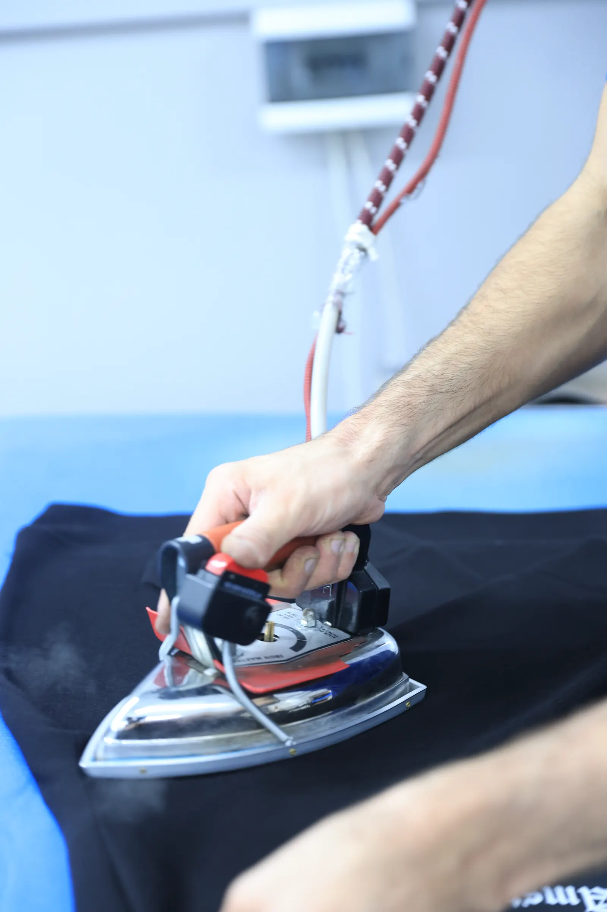
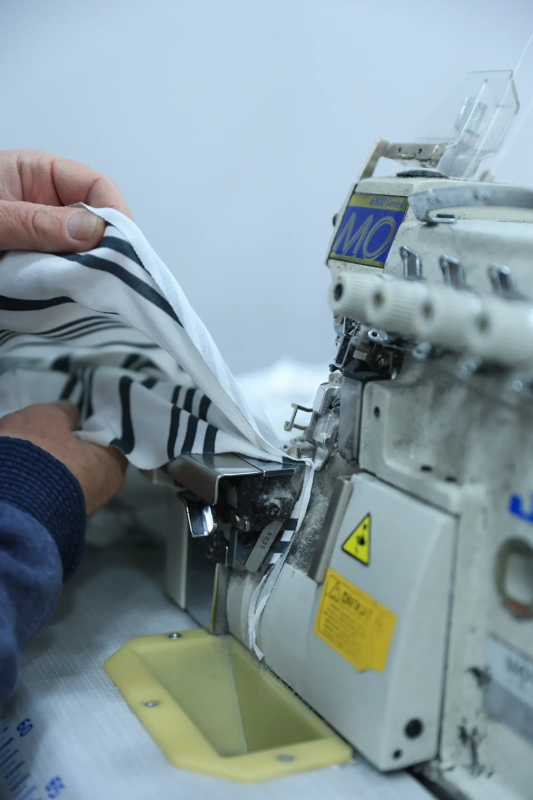
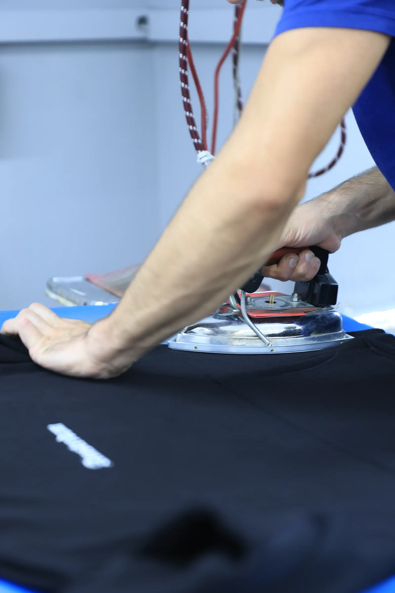
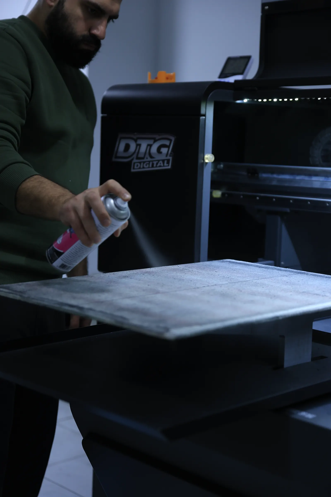

Hoodies & sweatshirts
Comfort, structure, fabric weight and detail work together.
PRODUCTS & DEVELOPMENT
We develop garments around your reference, fabric needs, desired detail and intended market—then make the approved piece real.
Our product work includes hoodies, sweatshirts, T-shirts and sportswear. Each piece is developed around the brief, fabric and desired finish.
Comfort, structure, fabric weight and detail work together.

Shape, hand feel and print choices define the final piece.

Pieces developed for active use and a clear visual identity.
A reference image is only the starting point. Fabric, silhouette, print and finish must work together in a physical product.





We prepare a sample so the garment can be judged in the hand: its fabric, look, size and details. Feedback informs the next iteration and the final production sample.
See the processPrint and finishing choices bring identity to a piece. We develop these decisions in the sample, then carry the approved direction into production.


A visual, sketch or product brief is enough to begin a development conversation.